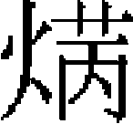

禮志一
禮之别有五，雖三代以後，因時損益，然其綱要，莫之能易焉。蒙古之禮，多從國之舊俗，《春秋》所謂「狄道」者也。世祖中統四年，始建太廟。至元元年，有事於太廟。八年，命劉秉忠、許衡定元正，受朝儀。自是册立皇后、皇太子，羣臣上尊號，進皇太后册寶，皆如元正儀。蓋吉禮、賓禮、嘉禮，秩秩可觀矣。蒙古不行三年之喪，無所謂凶禮也。其人以田獵爲俗，無所謂蒐苗獮狩也。其戰勝攻取，無所謂治兵、振旅、獻俘、告廟也，故軍禮亦闕而不備焉。至於宗廟之祭享，世祖嘗命趙璧等集議矣。然始以家人禮祔皇伯朮赤、察合台，既而擯太宗、定宗、憲宗不預廟享之列，當時議禮諸臣未有言其失者。其諸所謂「離乎夷狄，未能合乎中國」者歟？今爲《禮志》，博考遺文與其國俗，後有君子以備參考云。
郊祀上
蒙古拜天之禮最重，國有大事則免冠解帶，跪禱於天。憲宗二年秋八月八日，始以冕服拜天於日月山。是年十二月，又用孔元措言，合祭昊天后土，始作神位，以太祖、睿宗配享。四年秋七月，祭天於日月山。七年秋，駐蹕於軍腦兒，灑馬乳祭天。
世祖中統二年夏四月乙亥，躬祀天於舊桓州之西北，灑馬湩以爲禮，皇族之外無得而與焉。自是，每歲幸上都，以八月二十五日祭祀，謂之灑馬嬭子。用馬一、羯羊八。綵段、練絹各九匹，纏白羊毛穗者九、貂鼠皮三，命蒙古覡及蒙古、漢人秀才達官四員領其事。再拜告天，又呼「成吉思汗」御名而祝之曰：「托天皇帝福蔭，年年祭賽者。」禮畢，掌祭官四員各以祭幣表裏一賜之，餘幣及祭物則凡與祭者共分之。
十二年十二月，以受尊號，遣使豫告天地［一］，下太常檢討唐、宋、金舊儀。於國陽麗正門東南七里建祭臺［二］，設昊天上帝、皇地祇位二，行一獻禮。其後國有大典禮，皆即南郊告謝焉。十三年五月，以平宋，遣使告天地，中書下太常議定儀物以聞，詔以國禮行事。
三十一年，成宗即位。夏四月壬寅，始爲壇於都城南七里。翰林國史院檢閲官袁桷進十議，禮官推其博，多采用之。語詳桷傳，不具録。
大德六年春三月庚戌，合祭昊天上帝、皇地祇、五方帝於南郊。遣左丞相哈剌哈孫攝事，爲攝祀天地之始。
大德九年二月二十四日，右丞相哈剌哈孫等言：「去年地震星變，雨澤愆期，歲比不登。祈天保民之事，有天子親祀者三：曰天，曰祖宗，曰社稷。今宗廟、社稷，歲時攝官行事。祭天，國之大事也，陛下雖未及親祀，宜如宗廟、社稷，遣官攝祭。歲用冬至，儀物有司豫備，日期至則以聞。」詔曰：「卿言是也，其豫備儀物以待事。」
於是翰林、集賢、太常禮官皆會中書集議。博士疏曰：「冬至圜丘，惟祀昊天上帝，至西漢元始間，始合祭天地。歷東漢至宋，千有餘年，分祭、合祭，迄無定論。」集議曰：「《周禮》：冬至圜丘禮天，夏至方丘禮地。時既不同，禮樂亦異。王莽之制，何可法也？今當循唐、虞、三代之典，惟祀昊天上帝。其方丘祭地之禮，續議以聞。」
按《周禮》，壇壝三成，近代增外四成，以廣天文從祀之位。集議曰：「依《周禮》三成之制，然《周禮疏》云每成一尺，不見縱廣之度，恐壇上陿隘，器物難容。擬四成制内減去一成，以合陽奇之數。每成高八尺一寸，以合乾之九九。上成縱廣五丈，中成十丈，下成十五丈。四陛，陛十有二級。外設二壝，内壝去壇二十五步，外壝去内壝五十四步，壝各四門。壇設於丙巳之地，以就陽位。」
按古者親祀，冕無旒，服大裘而加衮。臣下從祀，冠服歷代所尚，其制不同。集議曰：「依宗廟見用冠服制度。」
按《周禮·大司樂》云：「凡樂，圜鐘爲宫，黄鐘爲角，太簇爲徵，姑洗爲羽，雷鼓雷鼗，孤竹之管，雲和之琴瑟，雲門之舞，冬至日於地上之圜丘奏之。若樂六變，則天神皆降，可得而禮矣。」集議曰：「樂者，所以動天地，感鬼神。必訪求深知音律之人，審五聲八音，以司肄樂。」
夏四月壬辰，中書復集議。博士言：「舊制：神位版用木。」中書議改用蒼玉金字，白玉爲座。博士曰：「郊祀尚質，合依舊制。」遂用木主。長二尺五寸，闊一尺二寸，上圓下方，丹漆金字，木用松柏， 以紅漆匣，黄羅帕覆之。造畢，有司議所以藏。議者復謂：「神主廟則有之，今祀於壇，對越在上，非若他神無所見也。」所製神主遂不用。
以紅漆匣，黄羅帕覆之。造畢，有司議所以藏。議者復謂：「神主廟則有之，今祀於壇，對越在上，非若他神無所見也。」所製神主遂不用。
七月九日，博士又言：「古者祀天，器用陶匏，席用藳鞂。自漢甘泉、雍畤之祀，以迄後漢、晉、魏、南北二朝、隋、唐，其壇壝、玉帛、禮器、儀仗，日益繁縟，浸失古者尚質之意。宋、金多循唐制，其壇壝禮器，考之於經，固未能全合。其儀法具在，當時名儒輩出，亦未嘗不援經而定也，酌古今以行禮，亦宜焉。今檢討唐、宋、金親祀、攝行儀注，并雅樂節次，合從集議。」太常議曰：「郊祀之事，聖朝自平定金、宋以來，未暇舉行。今欲修嚴，不能一舉而大備。然始議之際，亦須酌古今之儀，垂則後來。請從中書會翰林、集賢、禮官及明禮之士，講明去取以聞。」中書集議曰：「合行禮儀，非草創所能備。唐、宋皆有攝行之禮，除從祀受胙外，一切儀注悉依唐制修之。」
八月十二日，太常寺言：「尊祖備天，其禮儀樂章别有常典。若俟至日議之，恐匆遽有誤。」於是中書省臣奏曰：「自古漢人有天下，其祖宗皆配天享祭。臣等與平章何榮祖議，宗廟已依時祭享，今郊祀專祀昊天爲宜。」詔依所議行之。是歲南郊，配位遂省。
十一年，武宗即位。秋七月甲子，命御史大夫鐵古迭兒即南郊告謝天地，主用柏，素質元書，爲即位告謝之始。
至大二年冬十一月乙酉，尚書省臣及太常禮官言：「郊祀者，國之大禮。今南郊之禮已行而未備，北郊之禮尚未舉行。今年冬至南郊，請以太祖聖武皇帝配享。明年夏至北郊，以世祖皇帝配。」帝皆是之。十二月甲辰朔，丞相三寶奴、司徒田忠良、參政郝彬等奏曰：「南郊祭天於圜丘，大禮已舉。其北郊祭皇地祇於方澤，并神州地祇、五嶽四瀆、山林川澤及朝日夕月，此有國家所當崇禮者也。當聖明御極而弗舉行，恐遂廢弛。」詔曰：「卿議甚是，其即行焉。」
至大三年春正月，中書禮部移太常禮儀院，下博士擬定北郊從祀、朝日夕月禮儀。博士李之紹、蔣汝礪疏曰：「按方丘之禮，夏以五月，商以六月，周以夏至，其丘在國之北。禮神之玉以黄琮，牲用黄犢，幣用黄繒，配以后稷。其方壇之制，漢去都城四里，爲壇四陛。唐去宫城北十四里，爲方壇八角三，或每成高四尺，上闊十六步，設陛。上等陛廣八尺，中等陛一丈，下等陛廣一丈二尺。宋至徽宗始定爲再成。歷代制雖不同，然無出於三成之式。今擬取坤數用六之義，去都城北六里，於壬地選擇善地，於中爲方壇，三成四陛，外爲三壝。仍依古制，自外壝之外，治四面稍令低下，以應澤中之制。宫室、牆圍、器皿色，並用黄。其再成八角八陛，非古制，難用。其神州地祇以下從祀，自漢以來，歷代制度不一，至唐始因隋制，以嶽鎮海瀆、山林川澤、丘陵墳衍原隰，各從其方從祀。今盍參酌舉行？」
秋九月，太常禮儀院復下博士，檢討合用器物。冬十月丙午，三寶奴、田忠良等復言：「曩奉旨舉行南郊配位從祀，北郊方丘朝日夕月典禮。臣等議：欲祀北郊，必先南郊。今歲冬至禮圜丘，尊太祖皇帝配享；來歲夏至祀方丘，尊世祖皇帝配享。春秋朝日夕月，實合祀典。」詔曰：「所用儀物，其令有司速備之。」又言：「太廟故用瓦尊，乞代以銀。」從之。十一月丙申，有事於南郊，以太祖配，五方帝日月星辰從祀。時帝將親祀南郊，不豫，仍遣大臣代祀。
仁宗延祐元年夏四月丁亥，太常寺臣請立北郊。帝謙遜未遑，北郊之議遂輟。
英宗至治二年九月，詔議南郊祀事。中書平章買閭、御史中丞曹立、禮部尚書張埜，學士蔡文淵、袁桷、鄧文原，太常禮儀院使王緯、田天澤，博士劉致等會都堂議：
一曰年分。按前代多三年一祀，天子即位已及三年。當有旨。「欽依。」
二曰神位。《周禮·大宗伯》：「以禋祀祀昊天上帝。」註謂：「昊天上帝，冬至圜丘所祀天皇大帝也。」又曰：「蒼璧禮天。」注云：「此禮天以冬至，謂天皇大帝也。在北極，謂之北辰。」又云：「北辰，天皇耀魄寶也，又名昊天上帝，又名太一帝君，以其尊大，故有數名。」今按《晉書天文志·》：「中宫鉤陳口中一星曰天皇大帝，其神耀魄寶。」《周禮》所祀天神，正言昊天上帝。鄭氏以星經推之，乃謂即天皇大帝。然漢、魏以來，名號亦復不一。漢初曰上帝、曰太乙、曰皇天上帝，魏曰皇皇帝天，梁曰天皇大帝。惟西晉曰昊天上帝，與《周禮》合。唐、宋以來，壇上既設昊天上帝，第一等復有天皇大帝，其五天帝與太一、天一等，皆不經見。本朝大德九年，中書圓議：止依《周禮》祀昊天上帝。至大三年圓議：五帝從享，依前代通祭。
三曰配位。《孝經》曰：「孝莫大於嚴父，嚴父莫大於配天。」又曰：「郊祀后稷以配天。」此郊之所以有配也。漢、唐以下，莫不皆然。至大三年冬十月三日，奉旨十一月冬至合祭南郊，太祖皇帝配，圓議：取旨。
四曰告配。《禮器》曰：「魯人將有事於上帝，必先有事於類宫。」註：「告后稷也。告之者，將以配天也。」告用牛一。《宋會要》於致齋二日，宿廟告配，凡遣官犧尊籩豆，行一獻禮。至大三年十一月二十一日質明行事，初獻，攝太尉同太常禮儀院官赴太廟奏告。圜議：取旨。
五曰大裘冕。《周禮》：司裘「掌爲大裘，以共王祀天之服」，鄭司農云：「黑羊裘，服以祀天，示質也」。弁師「掌王之五冕」注：「冕服有六，而言五者，大裘之冕蓋無旒，不聯數也」。《禮記·郊特牲》曰：「郊之祭也，迎長日之至也。祭之日，王被衮以象天，戴冕十有二旒，則天數也。」陸佃曰：「禮，不盛服不充，蓋服大裘以衮襲之也。謂冬祀服大裘，被之以衮。」開元及開寶《通禮》，鸞駕出宫，服衮冕至大次，質明改服大裘冕而出次。《宋會要》：「紹興十三年，車駕自廟赴青城，服通天冠、絳紗袍，祀日服大裘衮冕。」圓議：用衮冕，取旨。
六曰匏爵。《郊特牲》曰：「郊之祭也，器用陶匏，以象天地之性也。」注謂：「陶，瓦器。匏，用酌獻酒。」《開元禮》、《開寶禮》皆有匏爵。大德九年，正配位用匏爵，有坫。圓議：正位用匏，配位飲福用玉爵，取旨。
七曰戒誓。唐《通典》引《禮經》，祭前期十日，親戒百官及族人，太宰總戒羣官。唐前祀七日，《宋會要》十日。《纂要》［三］：太尉南向，司徒、亞終獻、一品、二品從祀北向，行事官以次北向、禮直官以誓文授之太尉讀。今天子親行大禮，止令禮直局管勾讀誓文。圓議：令管勾代太尉讀誓，刑部尚書涖之。
八曰散齋、致齋。《禮經》前期十日，唐、宋、金皆七日，散齋四日，致齋三日。國朝親祀太廟七日，散齋四日於别殿，致齋三日於大明殿。圓議依前七日。
九曰藉神席。《郊特牲》曰：「莞簟之安，而蒲越藳鞂之尚。」注：「蒲越藳鞂，藉神席也。」《漢舊儀》高帝配天紺席，祭天用六綵綺席六重。成帝即位，丞相衡、御史大夫譚以爲天地尚質，宜皆勿修，詔從焉。唐麟德二年，詔曰：「自處以厚，奉天以薄，改用裀褥。上帝以蒼，其餘各視其方色。」宋以褥加席上，禮官以爲非禮。元豐元年，奉旨不設。國朝大德九年，正位藳鞂，配位蒲越，冒以青繒。至大三年，加青綾褥，青錦方座。圓議：合依至大三年於席上設褥，各依方位。
十曰犧牲。《郊特牲》曰：「郊特牲而社稷太牢。」又曰：「天地之牛角，繭栗。」秦用騮駒。漢文帝五帝共一牲。武帝三年一祀，用太牢。光武采元始故事，天地共犢。隋上帝、配帝，蒼犢二。唐開元用牛。宋正位用蒼犢一，配位太牢一。國朝大德九年，蒼犢二，羊、豕各九。至大三年，馬純色肥腯一，牲正副一，鹿一十八，野豬一十八，羊一十八。圓議：依舊儀。神位配位用犢外，仍用馬，其餘並依舊日已行典禮。
十一曰香鼎。大祭有三，始煙爲歆神，始宗廟則

蕭祼鬯［四］，所謂「臭陽達於牆屋」者也。後世焚香，蓋本乎此，非《禮經》之正。至大三年，用陶瓦香鼎五十，神座香鼎、香盒案各一。圓議：依舊儀。十二曰割牲。《周禮司士·》：「凡祭祀，帥其屬而割牲，羞俎豆。」又《諸子》：「大祭祀正六牲之體。」《禮運》云：「腥其俎，熟其殽」，「體其犬豕牛羊」。注云：「腥其俎，謂豚解而腥之，爲七體也。熟其殽，謂體解而爓之，爲二十一體也。體其犬豕牛羊，謂分别骨肉之貴賤，以爲衆俎也。」七體，謂脊、兩肩、兩拍、兩髀。二十一體，謂肩、臂、臑、膊、胳、正脊、脡脊、横脊、正脅、短脅、代脅並腸三、胃三、拒肺一、祭肺三也。宋元豐三年，詳定禮文所言，古者祭祀用牲，有豚解，有體解。豚解則爲七，以薦腥；體解則爲二十一，以薦熟。蓋犬豕牛羊，分别骨肉貴賤，其解之爲體，則均也。皇朝馬牛羊豕鹿，並依至大三年割牲用國禮。圓議：依舊儀。
十三曰大次、小次。《周禮·掌次》：「王旅上帝，張氈按皇邸。」唐《通典》：「前祀三日，尚舍直長施大次於外壝東門之内道北，南向。」《宋會要》：「前祀三日，儀鸞司帥其屬，設大次於外壝東門之内道北，南向；小次於午階之東，西向。」《曲禮》曰：「踐阼，臨祭祀。」正義曰：「阼，主階也。天子祭祀履主階行事，故云踐阼。」宋元豐詳定禮文所言，《周禮》宗廟無設小次之文。古者人君臨位於阼階。蓋阼階者，東階也，惟人主得位主階行事。今國朝太廟儀注，大次、小次皆在西，蓋國家尚右，以西爲尊也。圓議：依祀廟儀注。
續具末議：
一曰禮神玉。《周禮·大宗伯》：「以禋祀祀昊天上帝。」注：「禋之言煙也。周人尚臭，煙氣之臭聞者，積柴實牲體焉，或有玉帛。」正義曰：「或有玉帛，或不用玉帛，皆不定之辭也。」崔氏云：「天子自奉玉帛牲體於柴上。」引《詩》「圭璧既卒」，是燔牲玉也。蓋卒者，終也，謂禮神既終，當藏之也。正經即無燔玉明證。漢武帝祠太乙，胙餘皆燔之，無玉。晉燔牲幣，無玉。唐、宋乃有之。顯慶中，許敬宗等修舊禮，乃云郊天之有四圭，猶宗廟之有圭瓚也，並事畢收藏，不在燔列。宋政和禮制局言［五］：古祭祀無不用玉。《周官》：「典瑞掌玉器之藏。」蓋事已則藏焉，有事則出而復用，未嘗有燔瘞之文。今後大祀，禮神之玉時出而用，無得燔瘞。從之。蓋燔者取其煙氣之臭聞，玉既無煙，又且無氣，祭之日但當奠於神座，既卒事則收藏之。
二曰飲福。《特牲饋食禮》曰：尸九飯，「親嘏主人」。《少牢饋食禮》：尸十一飯，「尸嘏主人」。嘏，長也，大也。行禮至此，神明已饗，盛禮俱成，故膺受長大之福於祭之末也。自漢以來，人君一獻纔畢而受嘏。唐《開元禮》，太尉未升堂，而皇帝飲福。宋元豐三年，改從亞終獻，既行禮，皇帝飲福受胙。國朝至治元年，親祀廟儀注亦用一獻畢飲福。
三曰升煙。禋之言煙也，升煙所以報陽也。祀天之有禋柴，猶祭地之瘞血，宗廟之祼鬯［六］。歷代以來，或先燔而後祭，或先祭而後燔，皆爲未允。祭之日，樂六變而燔牲首，牲首亦陽也。祭終，以爵酒饌物及牲體，燎於壇。天子望燎，柴用柏。
四曰儀注［七］。《禮經》出於秦火之後，殘闕脱漏，所存無幾。至漢，諸儒各執所見。後人所宗，惟鄭康成、王子廱，而二家自相矛盾。唐《開元禮》、杜佑《通典》，五禮略完。至宋《開寶禮》並《會要》，與郊廟奉祠禮文，中間講明始備。金國大率依唐、宋制度。聖朝四海一家，禮樂之興，政在今日。况天子親行大禮，所用儀注，必合講求。大德九年，中書集議，合行禮儀依唐制。至治元年已有祀廟儀注，宜收大德九年、至大三年并今次新儀，與唐制參酌增損修之。侍儀司編排鹵簿，太史院具報星位。分獻官員數及行禮并諸執事官，合依至大三年儀制亞終獻官。取旨。
是歲，太皇太后崩，權止冬至南郊祀事。
泰定四年春正月，御史臺臣言：「自世祖迄英宗，咸未親郊，惟武宗、英宗親享太廟。陛下宜躬祀郊廟。」詔曰：「朕當遵世祖舊典，其命大臣攝行祀事。」閏九月甲戌，郊祀天地，致祭五嶽四瀆、名山大川。
至順元年，文宗將親郊。十月辛亥，太常博士言：「親祀儀注已具，事有未盡者，按前代典禮。親郊七日，百官習儀於郊壇。今既與受戒誓相妨，合於致齋前一日，告示與祭執事者，各具公服赴南郊習儀。親祀太廟雖有妨禁，然郊外尤宜嚴戒，往來貴乎清肅。凡與祭執事齋郎樂工，舊不設盥洗之位，殊非涓潔之道。今合於饌殿齊班廳前及齋宿之所，隨宜設置盥洗數處，俱用鍋釜温水，置盆杓巾帨，令人掌管。省諭必盥洗然後行事，違者治之。祭日，太常院分官提調神厨，監視割烹。上下鐙燭燎，已前雖有剪燭提調盆等官，率皆虚應故事，或減刻物料，燭燎不明。又嘗見奉禮贊賜胙之後，獻官方退，所司便服徹俎，壇上鐙燭一時俱滅，因而雜人登壇攘奪不能禁，甚爲褻慢。今宜禁約，省牲之前，凡入壝門之人，皆服窄紫，有官者公服。禁治四壝紅門，宜令所司添造關木鎖鑰，祭畢即令關閉，毋使雜人得入。其藳秸爵，事畢合依大德九年例焚之。」壬子，御史臺臣言：「祭日宜勅股肱近臣及諸執事人毋飲酒。」詔曰：「卿言甚善，其移文中書禁之。」丙辰，監察御史楊彬等言：「禮，享帝必以始祖爲配。今未聞設配位，竊恐禮文有闕。又，先祀一日，皇帝必備法駕出宿郊次。其扈從近侍之臣未嘗經歷，宜申加戒敕，以達孚誠。」命與中書議行。十月辛酉，始服大裘衮冕，親祀昊天上帝於南郊，以太祖配。自世祖混一六合，至文宗凡七世，而南郊親祀之禮始克舉焉。
至正三年十月十七日，親祀昊天上帝於圜丘，以太祖皇帝配享，如舊禮。右丞相脱脱爲亞獻官，太尉、樞密知院阿魯秃爲終獻官，御史大夫伯撒里爲攝司徒，樞密知院汪家奴爲大禮使，中書平章也先帖木兒、鐵木兒達識二人爲侍中，御史大夫也先帖木兒、中書右丞太平二人爲門下侍郎，宣徽使達世帖睦爾、太常同治李好文二人爲禮儀使，宣徽院使也先帖木兒執劈正斧。其餘侍祀官依等第定擬。
前期八月初七日，太常禮儀院移關禮部，具呈都省，會集翰林、集賢、禮部等官，講究典禮。九月，内承奉部班都知孫玉鉉，具録親祀南郊儀注云：致齋日，停奏刑殺文字，應侍享執事官員涖誓於中書省。享前一日，質明，備法駕儀仗暨侍享官，分左右叙立於崇天門外，太僕卿控御馬立於大明門外，侍儀官、導駕官各具公服，備擎執，立於致齋殿前。通事舍人二員引門下侍郎、侍中入殿相向立。侍中跪奏請皇帝中嚴，就拜，興，退出。少頃，引侍中跪奏外辦，就拜，興，皇帝出致齋殿。侍中跪奏請皇帝升輿，侍儀官、導駕官引擎執前導，巡輦路至大明殿西陛下。侍中跪奏請皇帝降輿，升殿，就拜，興，皇帝入殿，即御座。舍人引執事等官，叙於殿前陛下，相向立。通班舍人贊起居，引贊鞠躬平身。舍人引門下侍郎、侍中入殿至御座前，門下侍郎、侍中相向立。侍中跪奏請皇帝降殿升輿，就拜，興。侍儀官前導，至大明殿門外，侍中跪奏請皇帝升輿，就拜，興。至大明門外，侍中跪奏請皇帝降輿乘馬，門下侍郎跪奏請車駕進發，就拜，興，動稱警蹕。至崇天門外，門下侍郎跪奏請車駕少駐，勑衆官上馬，就拜，興。侍中承旨退，稱曰：「制可。」門下侍郎退，傳制，勑衆官上馬。贊者承傳，勑衆官於櫺星門外上馬。少頃，門下侍郎跪奏請車駕進發，就拜，興，動稱警蹕。華蓋繖扇儀仗百官左右前導，教坊樂鼓吹不作。至郊壇南櫺星門外，門下侍郎跪奏請皇帝權停，勑衆官下馬。侍中傳制，敕衆官下馬，自卑而尊與儀仗倒捲而左右駐立。駕至内櫺星門，侍中跪奏請皇帝降馬，步入櫺星門，由右偏門入。稍西，侍中跪奏請皇帝升輿，就拜，興。侍儀官暨導駕官引擎執前導，至大次殿門前，侍中跪奏請皇帝降輿，入就大次殿，就拜，興。皇帝入就大次，簾降，宿衛如式。侍中入，跪奏。勑衆官各退齋次，就拜，興。通事舍人承旨，勑衆官各還齋次。尚食進膳訖，禮儀使以祝册奏御署訖，奉出，郊祀令受而奠於坫。
其享日丑時二刻，侍儀官備擎執，同導駕官列於大次殿前。通事舍人引侍中、門下侍郎入大次殿。侍中跪奏請皇帝中嚴，服衮冕，就拜，興，退。少頃，舍人再拜，引侍中跪版奏外辦，就拜，興，退出。禮儀使入，跪奏請皇帝行禮，就拜，興。簾捲出大次，侍儀官備擎執，導駕官前導，皇帝至西壝門，侍儀官、導駕官擎執止於壝門外，近侍官、代禮官皆後從入。殿中監跪進大圭，禮儀使跪請皇帝執大圭，皇帝入行禮，禮節一如舊制。行禮畢，侍儀官備擎執，同導駕官前導，皇帝還至大次。通事舍人引侍中入，跪奏請皇帝解嚴，釋衮冕。停五刻頃，尚食進膳如儀。所司備法駕儀仗，同侍享等官分左右，叙立於郊南櫺星門外，以北爲上。舍人引侍中入，跪奏請皇帝中嚴，就拜，興，退。少頃，再引侍中跪版奏外辦，就拜，興。皇帝出大次，侍中跪奏請皇帝升輿。侍儀官備擎執，同導駕官前導，至櫺星門外，太僕卿進御馬。侍中跪奏請皇帝降輿乘馬，就拜，興。門下侍郎跪奏請車駕進發，就拜，興，動稱警蹕。至櫺星門外，門下侍郎跪請皇帝少駐，勑衆官上馬，就拜，興，侍中承旨退，稱曰：「制可。」門下侍郎傳制，勑衆官上馬，贊者承傳［八］，勑衆官上馬。少頃，門下侍郎跪奏請車駕進發，就拜，興。侍儀官備擎執，同導駕官前導，動稱警蹕。華蓋儀仗繖扇衆官左右前導，教坊樂鼓吹皆作。至麗正門裏石橋北，舍人引門下侍郎下馬，跪奏請皇帝權停，勑衆官下馬，贊者承傳。勑衆官下馬，舍人引衆官分左右，先入紅門内，倒捲而北駐立，引甲馬軍士於麗正門内石橋大北駐立，依次倒捲至櫺星門外，左右相向立。仗立於櫺星門内，倒捲亦如之。門下侍郎跪奏請車駕進發。侍儀官備擎執，導駕官導由崇天門入，至大明門外，引侍中跪奏請皇帝降馬升輿，就拜，興。至大明殿，引衆官相向立於殿陛下。俟皇帝入殿升座，侍中跪奏請皇帝解嚴，勑衆官皆退，通事舍人承旨勑衆官皆退，郊祀禮成。
十五年冬十月甲子，帝謂右丞相定住等曰：「敬天地，尊祖宗，重事也。近年以來，闕於舉行。當選吉日，朕將親祀郊廟。務盡誠敬，不必繁文。卿等其議典禮，從其簡者行之。」遂命右丞斡欒、左丞吕思誠領其事。癸酉，哈麻奏言：「郊祀之禮，以太祖配。皇帝出宫，至郊祀所，便服乘馬，不設内外儀仗、教坊隊子。齋戒七日，内散齋四日于别殿，致齋三日，二日於大明殿西幄殿，一日在南郊所。」丙子，以郊禮，命皇太子愛猷識理達臘祭告太廟。十一月壬辰，親祀上帝於南郊，以皇太子爲亞獻，攝太尉、右丞相定住爲終獻。帝怠於政事，郊祀之禮亦從簡殺，至以便服出宫，失禮甚矣。自至元十二年冬十二月，用香酒脯臡行一獻禮。而至治元年冬之祭告，泰定元年之正月，咸用之。自大德九年冬至，用純色馬一、蒼犢一、羊鹿野豕各九。十一年秋七月，用馬一、蒼犢正副各一、羊鹿野豕各九。而至大中告謝五，皇慶至延祐告謝七，與至治三年各告謝二，泰定元年之二月，咸如大德十一年之數。泰定四年閏九月，特加皇地祇黄犢一，將祀之夕勑送新獵鹿二。惟至大三年冬至，正配位蒼犢皆一，五方帝犢各一，皆如其方之色，大明青犢、夜明白犢皆一，馬一，羊鹿野豕各十有八，兔十有二，而四年四月如之。其犧牲品物香酒，皆參用國禮，而豐約不同。
南郊之禮，其始爲告祭，繼而爲大祀，皆攝事也，故攝祀之儀特詳。
【校勘記】
［一］「遣使」，原作「遺使」，據《元史》卷七二志第二十三《祭祀一》改。
［二］「麗正門」，「麗」原作「歷」，據《元史》卷七二志第二十三《祭祀一》改。
［三］「纂要」，原作「篡要」，據《元史》卷七二志第二十三《祭祀一》改。
［四］「祼鬯」，原作「裸鬯」，據《元史》卷七二志第二十三《祭祀一》改。
［五］「禮制局」，原作「祠制局」，按《元史》卷七二志第二十三《祭祀一》作「禮制局」，《宋史》均作「禮制局」，今據改。
［六］「祼鬯」，原作「裸鬯」，據《元史》卷七二志第二十三《祭祀一》改。
［七］「曰」，原作「目」，據《元史》卷七二志第二十三《祭祀一》改。
［八］「承傳」，原作「承傅」，據《元史》卷七二志第二十三《祭祀一》改。
本章完!